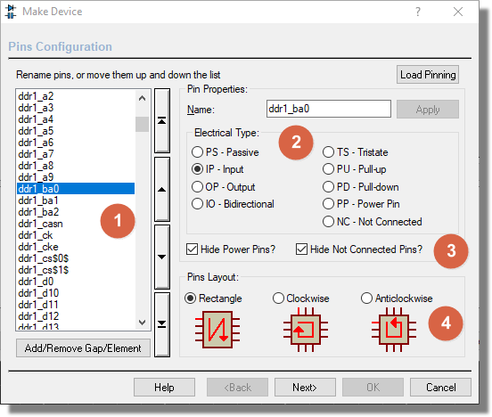

THE BODY EDITOR
Introduction
The organisation of the schematic part is something that causes users
a great deal of frustration both because of personal preference and through
lack of flexibility in the hosting CAD package. The larger the component
the more these problems manifest which is why we introduced the body editor
in Proteus import workflow.
The body editor allows for review and manipulation of incoming schematic
parts before their final creation into the libraries. Users can:
- Rename pins. For example NC_1, NC_2, NC_3 can be
block renamed to be NC.
- Order pins. Users who prefer their parts to be
in logical order can move the appropriate pins so that for example
all the pins in the address bus are together.
- Split the part into multiple elements. Almost essential
for BGA's and large IC's and particularly useful together with the
pin ordering feature as it lets you assign logical groups (e.g. power)
to different component bodies.
- Hide or show power pins and NC pins. Possibly the
most contentious area of all. Many customers want to hide power pins
to save wiring and NC pins because they are not connected. Equally,
many customers want all pins visible on the schematic and to then
explicitly handle the wiring of each one. The body editor gives users
the choice at the part creation stage.
- Run the pins around the component body in different
ways, notably giving the choice of a rectangular component body with
pins on two sides or a square component body with pins on all four
sides.
Dialogue Overview

Example Body Editor dialogue - see below for more
information.
Pin Listing / Ordering
This listview displays all the pins in the part being imported.
- You can select a pin and move it up or down using the buttons just
to the right of the list.
- You can select a group of consecutive pins by holding down the
SHIFT key and selecting the first pin and then the last pin in the
group. The group of pins can then be moved up or down using the arrow
buttons to the right of the listview.
- You can select a
- You can add a separator (a gap) between pins by clicking once on
the button at the bottom of the listview.
- You can split the part into multiple different elements by clicking
twice on the button at the bottom of the listview. All pins above
this element separator will then go around component body number 1
and all pins below will go around component body number 2. You can
create as many elements as you want.
Pin Naming / Typing
This area allows you to rename one or more pins and to set their electrical
type. This can be useful in the case where for example a lot of NC pins
are named individually with a numerical suffix. Simply select the pin(s)
you want to edit and then change their name and/or type and hit apply
to commit the changes.
Power Pins and NC Pins
Proteus allows you to reduce clutter and wiring on the schematic by
hiding power pins and/or NC pins so that they do not appear on the component
bodies. However, for auditing purposes many customers prefer each pin
to be visible and to explicitly connect them appropriately. These two
checkboxes give user control over visibility of both power pins and NC
pins.
Note that if you leave NC pins visible you should explictly
connect each pin to an NC terminal on the schematic.
Pins Layout on Body
This area provides some basic options for the layout of the pins on
the component body. In the case of a multi-element part the layout will
be the same for each element. You can select from the default two sided
rectangle or a square body with pins on all four sides arranged either
clockwise or anti-clockwise.